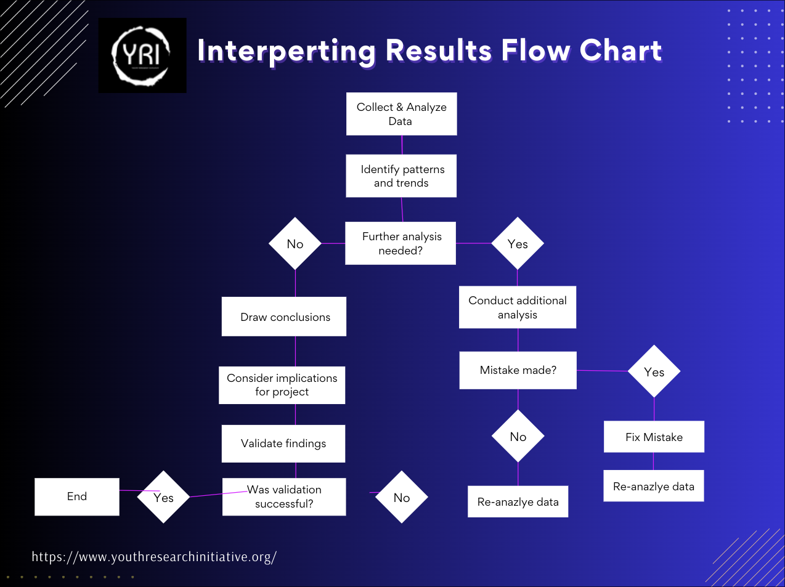

Interpreting Results in Relation to Project#
Author: Cecily May, Ankit Biswas
Introduction#
In many, if not all STEM research projects, the process of interpreting results holds significant importance. It serves as a pivotal stage where raw data is transformed into meaningful insights, facilitating the derivation of conclusions and guiding future research endeavors. The interpretation phase essentially acts as a bridge between data collection and informed decision-making, allowing researchers to discern patterns, trends, and relationships within their datasets. Without effective interpretation, data remains a mere jumble of figures lacking context or direction. Thus, highlighting the importance of interpreting results emphasizes the need for a methodical and thorough approach to data analysis, enabling the extraction of meaningful insights and fostering progress in STEM research/fields.
Ethical Considerations#
Navigating ethical considerations is essential when interpreting research results. The responsibility lies in ensuring the integrity and reliability of data. This includes safeguarding the privacy and confidentiality of participants, respecting their rights, and minimizing any potential harm. Additionally, remaining vigilant against biases or conflicts of interest that could distort findings is important. By addressing these ethical concerns with diligence and integrity, the credibility and trustworthiness of research outcomes are upheld, maintaining the highest standards of scientific conduct. For more information, see Ethics.
{kind=link}
Appropriate Conclusions#
What conclusions can you draw from your data? From statistical analysis, you saw how you could use inferential statistics to perform tests on batches of data and check for hypotheses. However, when drawing conclusions from your data, you must ensure that you are accounting for the scope of your research. Below, we outline some good practices to keep when drawing conclusions from your data.
Overgeneralizing#
When drawing conclusions, you must be extremely careful not to overgeneralize. For example, if you tested the effectiveness of meditation on a group of college-age students and found a high effect, you cannot claim that the same findings apply to all people. You should strive to only generalize your results for the group that you’re sampling from. While it may be tempting to make your findings apply to as large a group as possible, spreading incorrectly-generalized research can lead to dangerous and adverse effects for people and institutions.
Admitting Caveats#
As mentioned in the statistical analysis section, you will most likely have errors in your experiment. Whether it is due to measuring equipment, calibration errors, or mathematical assumptions, you as a researcher must propagate these errors through to your final results. Of course, this error propagation also applies to the drawn assumptions as well.
When claiming results that you have obtained, it is your scientific responsibility to not only cite how potential error was introduced into the experiment, but how it affected the final result. Others using and interpreting your findings must be aware of potential sources when using your results for their own research.
Tip
While the data shows a statistically significant increase in productivity when drinking coffee, there was also great variability in the activities performed while drinking coffee by the self-reporting participants. As a result, the normalization technique may result in errors as great as…
During this process, you must also acknowledge the inherent limitations of your experimental setup. When identifying these limitations, there is a list of questions you can ask yourself:
Does my measurement technique extract the ground truth or an approximation/heuristic of the ground truth?
Could my sample size/characteristics have limited/confounded my results?
Were the mathematical/theoretical assumptions made in my process error-prone or still uncertain in the scientific consensus?
With these questions, you can efficiently and effectively identify sources of error in your analysis and your experiment that you can address.
Looking at the Past#
Looking at examples of past research can provide valuable guidance when it comes to interpreting the results of your own. By examining how other researchers have approached their data analysis and methodology, you can identify potential limitations in your own procedure. Analyzing the strengths and limitations of previous work can help you critically evaluate your own results and compare the reliability and validity within the broader academic studies.Below are some examples of identifying limitations of studies:
Tip
Research on how eating a diet high in fruits and vegetables affects advanced Crohn’s disease
Methodology: This likely involves a longitudinal study design, where researchers track the dietary habits and disease progression of a group of Crohn’s disease patients over an extended period.
Strengths of Study:
Longitudinal design allows for monitoring changes over time, providing more robust evidence.
Focusing on a specific disease condition and dietary intervention enables targeted insights.
Limitations of Study:
Recruiting and retaining a sufficient sample size of Crohn’s patients may be challenging.
Controlling for confounding factors, such as medication use or other lifestyle factors, could be difficult.
Ethical considerations around dietary interventions for a chronic illness must be carefully addressed.
Tip
The percentage increase of new customers with the addition of online enrollment for banking services
Methodology: This study could involve a field experiment, where researchers compare the number of new customers before and after the implementation of online enrollment.
Strengths of Study:
A field experiment allows for the assessment of the intervention (online enrollment) in a real-world setting, enhancing the external validity of the findings.
Measuring the percentage increase in new customers provides a clear, quantifiable outcome.
Limitations of Study:
Isolating the impact of online enrollment from other factors that may influence customer acquisition (e.g., marketing campaigns, competitor actions) can be challenging.
Ensuring the reliability of customer data and accounting for potential biases in self-reported enrollment data are important considerations.
The generalizability of the findings may be limited to the specific banking context and customer base studied.
Tip
The Effectiveness of Online Learning Platforms on Student Performance in Higher Education
Methodology: This study will likely employ an observational/quasi-experimental design by comparing the academic performance of students using online learning platforms to those receiving in-person education. Data will most likely be collected from several educational institutions and will be statistically analyzed.
Strengths of Study:
The simple structure of the study can allow for direct comparison between those studying online and those studying in person.
Including data from multiple institutions will increase the generalizability of the data
Limitations of Study:
There may be selection bias depending on the types of individuals willing to participate in such a study or those who want their data to be sent.
Differences in the quality and implementation of online learning platforms across institutions may affect the results.
Confounding variables such as socioeconomic status may contaminate the results.
Extensions#
After completing your research, new avenues may emerge. To explore these avenues, you can generate extension questions for future research projects. When writing a manuscript in Section 6, you can even bring these up to inspire other researchers. There are several types of extensions, including:
Unexpected or inconclusive findings that warrant further investigation: The search results indicate that if the current study produced findings that were unexpected or inconclusive, these can be highlighted as potential avenues for future research. Further investigation could help explain these unexpected outcomes or clarify the unresolved aspects of the research.
Identifying limitations of the current study that could be addressed in future research: The search results emphasize that the limitations and flaws identified in the current study can be used to propose future research suggestions. Addressing these limitations, such as methodological issues, systematic/random errors, sampling constraints, or theoretical problems, can strengthen the understanding of the research problem.
Identification of related variables or contexts that were not initially considered: The search results suggest that future research can explore related variables, constructs, or contexts that were not initially included in the current study. Expanding the scope or examining the phenomenon in different settings can provide a more comprehensive understanding.
Potential applications or implications of the findings that suggest new research directions: The search results indicate that the practical or theoretical implications of the current study’s findings can point towards new avenues for future research. Exploring how the findings can be applied or extended to different domains or populations can lead to innovative research questions.
Note
Understanding Evaluation Methodologies
Research Project Evaluation—Learnings from the PATHWAYS Project Experience